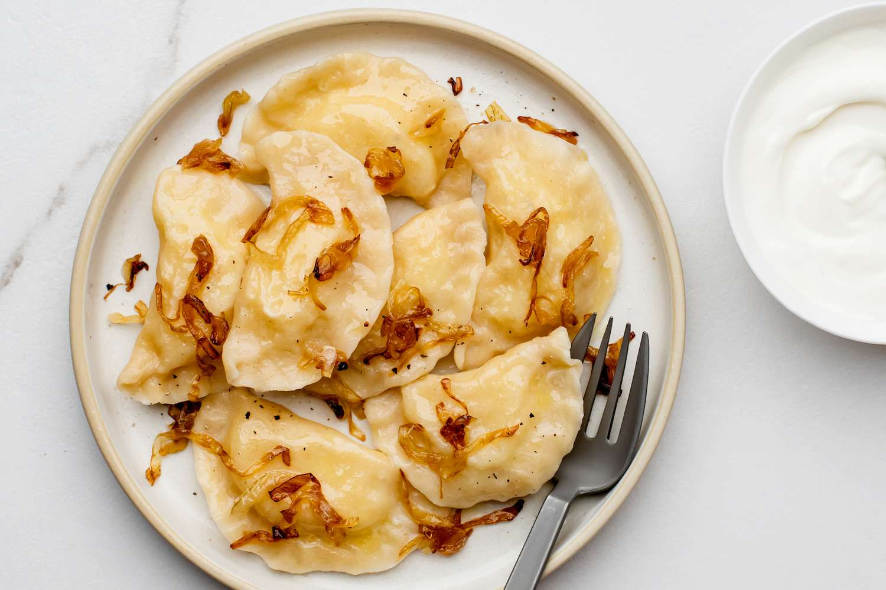

Pierogi

Polish Potato and Cheese Pierogi
Pierogi have always been a dish that is close to home for me. Having been born in Poland, I always welcome the
opportunity to indulge in a taste of home away from home. These potato and cheese pierogi exemplify the rustic
cooking techniques commonly found within Polish kitchens and they are sure to leave you wanting seconds!
Ingredients:
Filling:
- 5 Potatoes yellow, medium or 3 large russet potatoes
- 8 oz Farmer cheese
- 2 tablespoon Cheddar cheese (optional)
- 1 Onion sweet, yellow, large, chopped
- 1/2 teaspoon Garlic powder
- 1/2 teaspoon Onion powder
- 1 tablespoon Oil or ghee for onion
- Kosher salt and freshly ground black pepper to taste
Dough:
- 3 cups Whole purpose flour
- 1/2 cup Milk 2%, warm
- 1/2 to 3/4 cup Warm water (depending on how much your flour soaks)
- 1 tablespoon Butter melted, unsalted
- A little bit of kosher salt
Toppings:
- 1 Onion large, yellow, chopped
- 3 slabs Bacon chopped (optional)
- 1/2 cup Sour cream
- 2 tablespoon Oil or ghee for frying
Steps:
For Filling:
- Place potatoes in a pot, cover with water and cook until fork tender;
- In the meantime heat up the oil or ghee in a frying pan, add onions, and cook until golden brown;
- Once potatoes are cooked, using a potato ricer or potato masher, mashed potatoes so they don't have lumps;
- Add farmer cheese and mix together;
- Add onions, other cheeses, spices, salt, and pepper and mix well.
For Dough:
- Pour the flour on a counter or other surface that will allow you to make the dough;
- Add a pinch of salt;
- Make a little hole in the middle and start adding milk and butter;
- Add a little water at a time and work the dough until you can form a ball about 10-15 minutes;
- Once done, cover it with the big bowl and let it rest for about 20-30 minutes;
- Roll the dough until thin (like pasta) and using either a cookie cutter or a large wine glass cut the circles;
- Place 1 teaspoon of the filling in the middle of the circle;
- Wet one half of the circle and then seal it together;
- Boil a large pot of water and season with salt;
- Once the water is boiling put about 8 pierogi at a time;
- Once they come to the surface let them cook for 1 minute and using a spider or slotted spoon take them out on a plate;
- If you want to fry them as I did here, use 1 tablespoon of oil or ghee and fry pierogi on each side until golden brown;
For Toppings
- Using separate pans add oil and onions and fry the onions until golden brown and bacon until crispy (you don't need fat for bacon as it is already fatty);
- Add onions and bacon on top of the pierogi and serve with sour cream.
Notes:
- Some people use eggs for the dough. I tried all kinds of dough variations and in my opinion, mine is the most delicate. Egg
tends to make the dough tougher. You can add an egg to the dough and reduce the amount of liquid.
- Addition of blue cheese and cheddar is something new to me. It's a simple trick from a very famous
Polish chef. I tried it and it really elevates this dish to another level.
- If you are not serving pierogi immediately, take them out on a counter and
let them cool down and dry a little bit. Make sure that they are not touching each other.
Once cooled, place them on a baking sheet, again at distance from each other, place in a freezer,
and let them freeze. Once done, you can pack them in a plastic bag.
Return Home